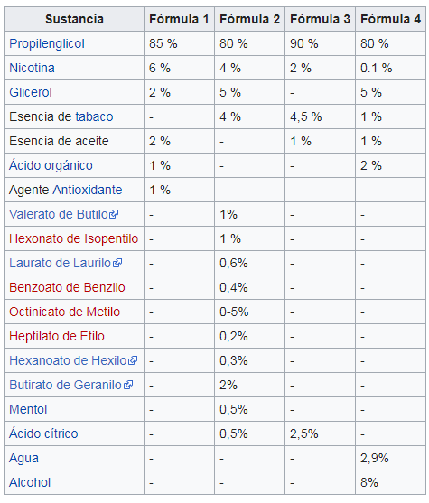

E-Liquids
Solución de nicotina, líquidos y aromas
Los líquidos utilizados en los cigarrillos electrónicos se encuentran habitualmente con una gran variedad de formulaciones, con distintos sabores (p.ej. a frutas, a mentas, a cremas, tabaquiles) y diferentes concentraciones de nicotina. En los niveles más altos de concentración de nicotina, fumar cigarrillos electrónicos se pretenden aportar dosis de nicotina que se aproximan a las consumidas con los cigarrillos de tabaco, para ser utilizadas como terapia de deshabituación y con la pretensión de aportar únicamente una de las sustancia responsables de la adicción tabáquica. Es de destacar que la nicotina es solo una de las aproximadamente 4000 sustancias presentes en el cigarrillo tradicional, la que se considera responsable en mayor medida de la adicción al tabaco y se utiliza del mismo modo que se proporciona en otras terapias de deshabituación, aunque mediante un sistema que imita de una manera más natural la administración de la droga que los chicles, parches o comprimidos de uso farmacéutico. Al poder escoger la concentración de nicotina en los líquidos el cigarrillo electrónico permite disminuir paulatinamente el consumo de la droga reduciendo el síndrome de abstinencia. Uno de los mayores distribuidores on line, Vaiu, ha elaborado la siguiente guía: ¿Que nivel de nicotina elegir en los líquidos para cigarrillos electrónicos?.
Al no producirse combustión de la mezcla, las sustancias consideradas más tóxicas del tabaco no se encuentran presentes en los vapores generados por los cigarrillos electrónicos, aunque si lo está la nicotina. Es de destacar que los líquidos también se encuentran en formulaciones que carecen de nicotina, por lo que en este caso su orientación es más lúdica y tiene menor relación con la pretensión de establecer estos dispositivos como sistemas de dosificación de nicotina.
Dependiendo del aparato, los cartuchos o atomizadores son válidos para entre 40 y 400 caladas. Los cartuchos (que son de muchos tipos y principios de funcionamiento: cartuchos con perlón que absorbe el E-liquid a vaporizar que son de diferentes formas como redondos, semiplanos y planos, cartomizadores -que suman cartucho + atomizador en una sola pieza, son descartables o rinden de tres a cinco recargas- claromizadores -ídem pero transparentes- E-Tank -ídem cartucho pero sin perlón- y más que se van inventando e incorporando, cada uno tiene sus pro y contras) vacíos pueden reemplazarse por otro nuevo o bien rellenarse con más solución. Esta solución, también llamada “E-líquid”, se vende a menudo en frascos de 5 a 30 ml. La solicitud de patente de Ruyan menciona cuatro fórmulas diferentes para la solución de nicotina:
Tipos de variedades de E-liquids
Los E-liquids (o Liquidos E) Pueden venir en una increíble variedad de sabores y colores. Como los que podremos ver a continuación:
Nicotina
Antes que nada, la nicotina es un veneno, un mal uso de la misma puede llegar a ocasionar la muerte. Una sola gota de nicotina PURA “sin diluir”, mataría a una persona en minutos.
Pero tampoco es para alarmarse y salir corriendo una vez leído el anterior párrafo. En el mundo del vapeo se utiliza nicotina diluida (siempre hablando de líquidos comerciales y listos para vapear), por lo general entre un 0,6% y 2,4%, esto quiere decir que se utiliza 6 miligramos de nicotina por cada mililitro de líquido en graduaciones bajas y 24 miligramos en graduaciones altas.
Advertencias y Cuidados:
· La nicotina es altamente adictiva y tóxica por inhalación y por contacto con la piel. · Su uso está prohibido para menores de 18 años. · No debe ser utilizada por personas con enfermedades o afecciones del corazón, tampoco con problemas de presión arterial. · No debe ser utilizada durante el embarazo o la lactancia. · Mantenga sus cigarrillos electrónicos, accesorios y e-líquidos fuera del alcance de los niños y mascotas. · En caso de ingestión, acuda inmediatamente al médico. · La cantidad de nicotina de un cartucho, aun siendo pequeña, si es ingerida por un niño pequeño puede causarle graves daños a su salud, incluso la muerte. Por favor. en caso de ingestión acuda a su médico inmediatamente. · En caso de contacto con la piel, lavar con abundante agua y jabón
La nicotina NO ES cancerígena, SI adictiva!
Mucha gente se confunde y cree que el cigarrillo de tabaco (también llamado analógico) provoca cáncer a causa de la nicotina y esto no es asi!, el cigarrillo tradicional contiene 4000 sustancias, al menos 40 de ellas son potencialmente cancerígenas, algunas son:
- -Alquitrán
- -Amoníaco
- -Arsénico
- -Butano
- -Monóxido de carbono
Por otro lado la nicotina si es adictiva, es la causante de que un fumador necesite fumar cada vez con más frecuencia. A los 7 segundos de dar una calada, la nicotina alcanza nuestro cerebro. Esta droga actúa sobre unos receptores causando el “subidón” que nuestro cuerpo experimenta. En el momento que apagamos el cigarro, es cuando mayor índice de nicotina tenemos en la sangre. A la media hora, el nivel ha descendido notablemente y comenzamos a sentir los síntomas de adicción. Los síntomas que se sienten entre un cigarrillo y el siguiente (un pequeño “síndrome de abstinencia”) causados por las bajadas y subidas del nivel de nicotina, hacen que padezcamos a su vez bajadas y subidas de estrés y ansiedad. Para evitar esas subidas y bajadas necesitamos que el espacio entre un cigarrillo y el siguiente sea cada vez menor. Por eso es raro encontrar fumadores que consuman menos de una cajetilla al día.